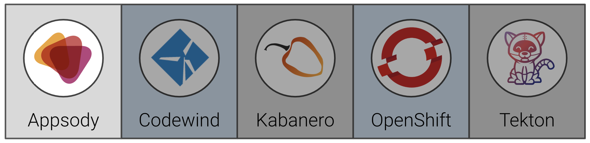
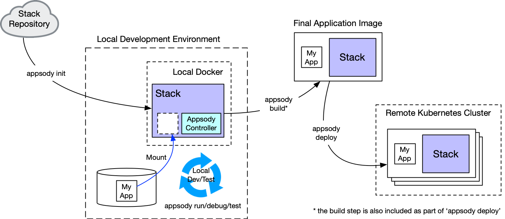

Exercise 5: Customizing an existing Appsody Stack¶
The goals for this day are to customize each of the pre-configured asset from Day 1, meaning we will:
- extend an Appsody Stack
- publish a new Collections
- add a new Tekton task to our Tekton pipeline
Specifically, when you have completed this exercise, you will understand how to:
- extend an Appsody stack to create a new asset to be used in our Collection

Prerequisites¶
You should have already carried out the prerequisites defined in the Pre-work. Check that you have access to the Appsody CLI by typing (the exact version number my be greater than shown below):
NOTE: In the exercises that follow you will see the actual command to run, followed by a separate example of running the command with the expected output. You only need to run the first example and never need to run a command you see preceded by a "$". You can even use the copy button on the right side of the command to make copying easier.
appsody version
You should see output similar to the following:
$ appsody version
appsody 0.5.3
Steps¶
- The role of a stack in the development process
- Stack structure
- Create a new stack, based on an existing one
- Use the new stack in our example application
1. The role of a stack in the development process¶
Developers use stacks to simplify building applications that require a specific set of technologies or development patterns. While there are numerous publicly available stacks to choose from, many enterprises want to build their own set of stacks that uphold their specific requirements and standards for how they want to their developers to build cloud native applications.
In this exercise, you will learn how to modify an existing stack to more closely match your requirements. Before starting this, let's do a quick review of the design requirements for stacks. A stack is designed to support the developer in either a rapid, local development mode or a build-and-deploy mode.
Rapid, local development mode¶
In this mode, the stack contains everything a developer needs to build a new application on a local machine, with the application always running in a local containerized Docker environment. Introducing containerization from the start of the application development process (as opposed to development solely in the user space of the local machine) decreases the introduction of subtle errors in the containerization process and removes the need for a developer to install the core technology components of their application.
In this mode, the stack is required to have all the dependencies for the specific technologies pre-built into the Docker image, and also to dynamically compliment these with whatever dependencies the developer adds explicitly for his or her code.
Rapid local development mode in Appsody consists of the Appsody CLI (hooked into a local IDE if required) communicating with a local Docker container that is running the application under development. With this mode, application code can be held on the local file system, while being mounted in the Docker container, so that a local change can automatically trigger a restart of the application.
Build-and-deploy mode¶
In this mode, the stack enables the Appsody CLI to build a self-contained Docker image that includes both the core technologies in the stack plus the application code, along with the combined dependencies of both. You can deploy the resulting image manually or programmatically to any platform that supports Docker images (such as a local or public Kubernetes cluster).
A pictorial view of how an application developer uses a stack, looks like this:

The above development flow shows the manual deployment to a Kubernetes cluster. In more production-orientated environments, GitOps might trigger the build and deploy steps and Tekton Pipelines would drive the deployment. Collections, which are a part of Cloud Pak for Applications, bring together Appsody stacks, GitOps, and Tekton Pipelines to provide an enterprise-ready solution for cloud-native application development and deployment. We'll look at this in later exercises.
2. Stack structure¶
Because a single Appsody stack can enable both rapid, local development and build-and-deploy modes, all stacks follow a standard structure. The structure below represents the source structure of a stack:
my-stack
├── README.md
├── stack.yaml
├── image/
| ├── config/
| | └── app-deploy.yaml
| ├── project/
| | ├── [files that provide the technology components of the stack]
| | └── Dockerfile
│ ├── Dockerfile-stack
| └── LICENSE
└── templates/
├── my-template-1/
| └── [example files as a starter for the application, e.g. "hello world"]
└── my-template-2/
└── [example files as a starter for a more complex application]
As a Stack Architect you must create the above structure, build it into an actual stack image ready for use by an Application Developer who bases their new application on your stack. Part of your role as a stack architect is to include one of more sample applications (known as templates) to help the application developer get started.
Hence, when you build a stack, the structure above is processed and generates a Docker image for the stack, along with tar files of each of the templates, which can then all be stored and referenced in a local or public Appsody repo. The Appsody CLI can access the repo to use the stack to initiate local development.
For this exercise we will modify the nodejs-express stack that we have been using for our quote-frontend, to add some additional security hardening (individual enterprises often have specific security standards that need to be met to allow deployment).
NOTE: For future reference, to make your own stack from scratch, instead of extending an existing one, follow this tutorial.
3. Create a new stack, based on an existing one¶
The goal of this step is to create a new Node.js Express stack by modifying the existing one. We'll copy it, build, and modify it.
Initialize the stack¶
To create a new stack, you must first construct a scaffold of the above structure. Stacks are classified as being stable, incubating or experimental. You can read more about these classifications here. To make things easy, the Appsody CLI supports an appsody stack create command to create a new stack, by copying an existing one.
By running the appsody stack create command, nodejs-express stack will be copied and moved, a directory will be created containing the new stack.
cd ~/appsody-apps
appsody stack create my-nodejs-express --copy incubator/nodejs-express
cd my-nodejs-express
ls -al
You should see output similar to the following:
$ ls -la
total 24
drwxr-xr-x 6 henrynash staff 192 8 Nov 11:51 .
drwxr-xr-x 5 henrynash staff 160 8 Nov 11:51 ..
-rw-r--r-- 1 henrynash staff 5026 8 Nov 11:51 README.md
drwxr-xr-x 7 henrynash staff 224 8 Nov 11:51 image
-rw-r--r-- 1 henrynash staff 319 8 Nov 11:51 stack.yaml
drwxr-xr-x 4 henrynash staff 128 8 Nov 11:51 templates
If you inspect the contents of the image directory, you will see how it matches the stack structure given earlier.
Build your new stack¶
Before we make any changes, let's go through the steps of building (or packaging) a stack, to create a stack image (which is a Docker image) that the Appsody CLI can use to initiate a project using that stack.
There is a Docker file (Dockerfile-stack) within the sample stack structure you copied. The appsody stack package command will use this to build the image.
To build your new stack in this way, from the my-nodejs-express directory enter:
appsody stack package
This runs a Docker build, installs my-nodejs-express into a local Appsody repository (called dev.local), and runs some basic tests to make sure the file is well formed.
Once the build is complete, use the appsody list command to check that it is now available in the local repo:
appsody list dev.local
You should see output similar to the following:
$ appsody list dev.local
REPO ID VERSION TEMPLATES DESCRIPTION
dev.local my-nodejs-express 0.2.8 scaffold, *simple Express web framework for Node.js
Run the new stack¶
So, at this point, you have been carrying out your role as a stack architect to build and install your new (albeit unchanged) stack. Now it's time to try it out as an application developer.
Create a new directory and initialize it with this new Appsody stack:
mkdir ~/appsody-apps/test-my-stack
cd ~/appsody-apps/test-my-stack
appsody init dev.local/my-nodejs-express
Now use appsody run to test running an application based on your copy of the stack:
appsody run
You should see output similar to the following:
$ appsody run
Running development environment...
Using local cache for image dev.local/appsody/my-nodejs-express:0.2
Running docker command: docker run --rm -p 3000:3000 -p 9229:9229 --name test73-dev -v /Users/henrynash/codewind-workspace/test73/:/project/user-app -v test73-deps:/project/user-app/node_modules -v /Users/henrynash/.appsody/appsody-controller:/appsody/appsody-controller -t --entrypoint /appsody/appsody-controller dev.local/appsody/my-nodejs-express:0.2 --mode=run
[Container] Running APPSODY_PREP command: npm install --prefix user-app && npm audit fix --prefix user-app
added 170 packages from 578 contributors and audited 295 packages in 3.5s
[Container] found 0 vulnerabilities
...
[Container] App started on PORT 3000
To check it is running, in a separate terminal window we can use curl to hit the endpoint:
curl -v localhost:3000
So now we are ready to make change to our new stack. For this exercise we will harden the HTTP headers that an application, built using this stack, responds with. We can look at the current headers returned:
$ curl -v localhost:3000
* Trying 127.0.0.1...
* TCP_NODELAY set
* Connected to localhost (127.0.0.1) port 3000 (#0)
> GET / HTTP/1.1
> Host: localhost:3000
> User-Agent: curl/7.64.1
> Accept: */*
>
< HTTP/1.1 200 OK
< X-Powered-By: Express
< Content-Type: text/html; charset=utf-8
< Content-Length: 19
< ETag: W/"13-0ErcqB22cNteJ3vXrBgUhlCj8os"
< Date: Mon, 21 Oct 2019 12:09:49 GMT
< Connection: keep-alive
<
* Connection #0 to host localhost left intact
Hello from Appsody!
Stop this current appsody run by running appsody stop in a separate terminal window, from within the same directory.
For this exercise we will modify the stack to include the popular HTTP header security module helmet, and hence this should change the headers we see returned to us. Note we will do this as a stack architect since we don't want to rely on application developers remembering to do this. By doing this in the stack itself, all applications built using our modified stack will have helmet automatically enabled.
Modify your custom stack¶
When creating a custom stack, based on an existing stack, the first thing to do is to take a look at what the existing stack has provided. A more detailed description of the stack components can be found here, but the key ones are:
- A Dockerfile (
image/Dockerfile-stack) that builds your stack image. This is what theappsody stack packagecommand used above to build a Docker image of your stack - which is, if you like, the eventual artifact that you deliver as a stack architect to application developers. - A Dockerfile (
image/project/Dockerfile) that builds the final application image. This final image will contain both your stack and their application, and this Dockerfile is processed by the application developer runningappsody buildandappsody deploy. - Typically some kind of server side code that is enabling the application the developer will create and run. For this stack, this is
image/project/server.js. - Some kind of dependency management, ensuring both the correct inclusion of components defined by the stack, as well as, potentially, any added by the application developer. For this stack, this is
image/project/package.json. - At least one sample application (or template); these are stored in the
templatesdirectory.
It is worth taking some time checking out the files given above to get a feel of the stack.
For some stack modifications, you can actually use a form of stack inheritance - i.e. by using the existing stack images as the FROM image in Dockerfile-stack. An example of this might be where you just want to change one of the Dockerfile variables. In general, however, most modified stacks are effectively copies of an existing stack, with the additional changes added to gain the new, required functionality.
Having examined the files above, you might have already spotted what we need to do to incorporate helmet into the new stack - namely to modify image/project/server.js to enable it.
Go back to the my-nodejs-express directory.
cd ~/appsody-apps/my-nodejs-express
The current code in image/project/server.js looks something like this:
// Requires statements and code for non-production mode usage
if (!process.env.NODE_ENV || !process.env.NODE_ENV === 'production') {
require('appmetrics-dash').attach();
}
const express = require('express');
const health = require('@cloudnative/health-connect');
const fs = require('fs');
require('appmetrics-prometheus').attach();
const app = express();
const basePath = __dirname + '/user-app/';
function getEntryPoint() {
let rawPackage = fs.readFileSync(basePath + 'package.json');
let package = JSON.parse(rawPackage);
if (!package.main) {
console.error("Please define a primary entrypoint of your application by adding 'main: <entrypoint>' to package.json.")
process.exit(1)
}
return package.main;
}
// Register the users app. As this is before the health/live/ready routes,
// those can be overridden by the user
const userApp = require(basePath + getEntryPoint()).app;
app.use('/', userApp);
const healthcheck = new health.HealthChecker();
app.use('/live', health.LivenessEndpoint(healthcheck));
app.use('/ready', health.ReadinessEndpoint(healthcheck));
app.use('/health', health.HealthEndpoint(healthcheck));
app.get('*', (req, res) => {
res.status(404).send("Not Found");
});
const PORT = process.env.PORT || 3000;
const server = app.listen(PORT, () => {
console.log(`App started on PORT ${PORT}`);
});
// Export server for testing purposes
module.exports.server = server;
module.exports.PORT = PORT;
We will modify this file by adding two lines, to import helmet (with require()), and to enable it with app.use():
// Requires statements and code for non-production mode usage
if (!process.env.NODE_ENV || !process.env.NODE_ENV === 'production') {
require('appmetrics-dash').attach();
}
const express = require('express');
const helmet = require('helmet');
const health = require('@cloudnative/health-connect');
const fs = require('fs');
require('appmetrics-prometheus').attach();
const app = express();
app.use(helmet());
const basePath = __dirname + '/user-app/';
...
Since we have added a new module that is required, we must also update the dependency management (package.json), to ensure this is pulled in:
{
...
"dependencies": {
"@cloudnative/health-connect": "^2.0.0",
"appmetrics-prometheus": "^3.0.0",
"express": "~4.16.0",
"helmet": "^3.21.1"
},
...
}
Now that we have modified our stack, we need to re-package it, using the same command as before:
appsody stack package
NOTE The
appsody runcommand should pull down the latest packaged version, but in case this doesn't work, delete the directory and re-initialize.
cd ~/appsody-apps
rm -rf test-my-stack
mkdir test-my-stack
cd test-my-stack
appsody init dev.local/my-nodejs-express
This will have updated the dev.local index, so we can again go and run our application:
appsody run
If we now hit the endpoint as before with curl in verbose mode, we can see if the HTTP headers have changed:
curl -v localhost:3000
You should now see security related headers like X-DNS-Prefetch-Control, Strict-Transport-Security, and X-Download-Options:
$ curl -v localhost:3000
* Trying 127.0.0.1...
* TCP_NODELAY set
* Connected to localhost (127.0.0.1) port 3000 (#0)
> GET / HTTP/1.1
> Host: localhost:3000
> User-Agent: curl/7.64.1
> Accept: */*
>
< HTTP/1.1 200 OK
< X-DNS-Prefetch-Control: off
< X-Frame-Options: SAMEORIGIN
< Strict-Transport-Security: max-age=15552000; includeSubDomains
< X-Download-Options: noopen
< X-Content-Type-Options: nosniff
< X-XSS-Protection: 1; mode=block
< X-Powered-By: Express
< Content-Type: text/html; charset=utf-8
< Content-Length: 19
< ETag: W/"13-0ErcqB22cNteJ3vXrBgUhlCj8os"
< Date: Fri, 08 Nov 2019 19:39:22 GMT
< Connection: keep-alive
<
* Connection #0 to host localhost left intact
Hello from Appsody!*
As you should see, because the stack now incorporates helmet, the HTTP headers have changes, and our application runs with this protection. The inclusion of helmet is just an example of some of the security hardening you might want to take within your own enterprise.
Stop this current appsody run by running appsody stop in a separate terminal window, from within the same directory.
4. Use the new stack in our example application¶
A final step is to switch the actual quote-frontend application we built in Exercise 2 to use our new stack (rather than the original nodejs-express stack).
The formal way of doing this is to repeat the steps from Exercise 2, where the new project is initialized (using our new stack), and the dependencies and code for the frontend are copied into the new project directory. However, in this case, where we have not changed anything that is actually placed directly in the project directory, we can take a short cut and just update the project to point at our new stack. This also gives you a bit more of an idea as to how an application project is linked to a stack. In the quote-frontend directory you created in Exercise 2, you should see a file called .appsody-config.yaml, which was created by the appsody init step.
cd ~/appsody-apps/quote-frontend
ls -la
You should see output similar to the following:
$ ls -al
total 192
drwxr-xr-x 16 henrynash staff 512 15 Oct 12:42 .
drwxr-xr-x+ 85 henrynash staff 2720 17 Oct 21:37 ..
-rw-r--r-- 1 henrynash staff 64 19 Oct 11:10 .appsody-config.yaml
-rw-r--r-- 1 henrynash staff 1316 15 Oct 11:12 .gitignore
drwxr-xr-x 4 henrynash staff 128 15 Oct 11:12 .vscode
-rw-rw-r-- 1 henrynash staff 806 15 Oct 12:50 app-deploy.yaml
-rw-r--r-- 1 henrynash staff 290 15 Oct 11:15 app.js
drwxr-xr-x 4 henrynash staff 128 15 Oct 11:15 config
drwxr-xr-x 2 henrynash staff 64 15 Oct 11:16 node_modules
-rw-r--r-- 1 henrynash staff 0 15 Oct 11:19 nodejs_dc.log
-rw-r--r-- 1 henrynash staff 0 15 Oct 11:19 nodejs_restclient.log
-rw-r--r--@ 1 henrynash staff 73319 15 Oct 11:16 package-lock.json
-rw-r--r-- 1 henrynash staff 615 15 Oct 11:15 package.json
-rw-r--r-- 1 henrynash staff 2779 15 Oct 11:15 quote.js
drwxr-xr-x 3 henrynash staff 96 15 Oct 11:12 test
drwxr-xr-x 3 henrynash staff 96 15 Oct 11:15 views
Inspecting that file, reveals that it contains a pointer to the stack:
cat .appsody-config.yaml
Should output a configuration that uses nodejs-express:
project-name: quote-frontend
stack: kabanero/nodejs-express:0.2
We can simply change the second line to, instead, point to our new stack, i.e.:
NOTE: When using a stack that is in development, it will carry semantic versioning derived from the original copied stack in addition to a latest tag.
project-name: quote-frontend
stack: dev.local/appsody/my-nodejs-express:latest
Now re-run the frontend with appsody run:
appsody run
It should use our new stack:
$ appsody run
Running development environment...
Using local cache for image dev.local/appsody/my-nodejs-express:latest
...
[Container] App started on PORT 3000
We can confirm that our new HTTP protection is being used by, instead of using a browser, again using curl in verbose mode to hit the published endpoint:
curl -v localhost:3000
You should see output similar to the following:
$ curl -v localhost:3000
* Trying 127.0.0.1...
* TCP_NODELAY set
* Connected to localhost (127.0.0.1) port 3000 (#0)
> GET / HTTP/1.1
> Host: localhost:3000
> User-Agent: curl/7.64.1
> Accept: */*
>
< HTTP/1.1 302 Found
< X-DNS-Prefetch-Control: off
< X-Frame-Options: SAMEORIGIN
< Strict-Transport-Security: max-age=15552000; includeSubDomains
< X-Download-Options: noopen
< X-Content-Type-Options: nosniff
< X-XSS-Protection: 1; mode=block
< X-Powered-By: Express
< Location: /quote
< Vary: Accept
< Content-Type: text/plain; charset=utf-8
< Content-Length: 28
< Date: Fri, 08 Nov 2019 19:51:50 GMT
< Connection: keep-alive
<
* Connection #0 to host localhost left intact
Found. Redirecting to /quote
We can tell our sample application is now using the new stack because it includes the new security related headers.
Stop this current appsody run by running appsody stop in a separate terminal window, from within the same directory.
Congratulations! We have successfully built and tested out our modified stack - and seen how applications built against this stack automatically gain the (new) features it provides (without the application developer having to do anything themselves). In later exercises, we will discover how to publish this stack for other developers to utilize to build their own applications.